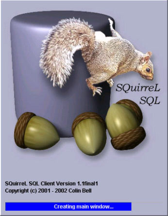
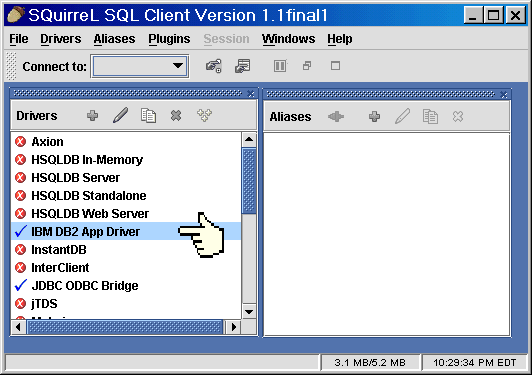
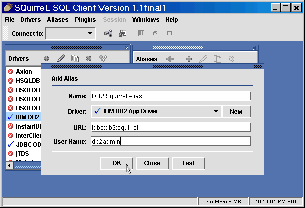
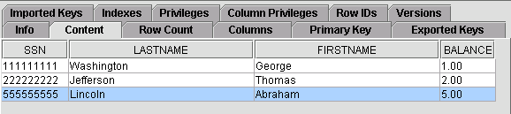
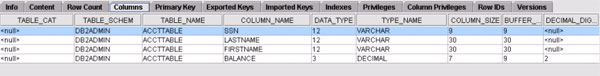
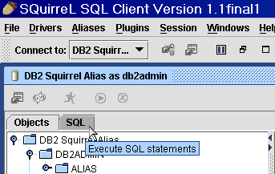
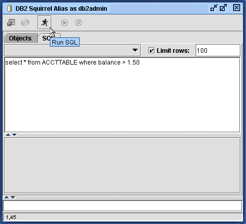
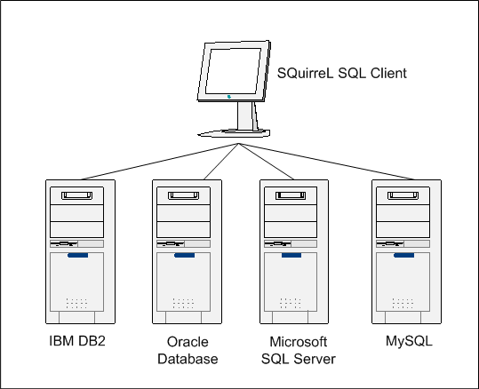

IBM Software Services for WebSphere
December 3, 2003
This article describes an open source application called SQuirreL SQL Client that provides an easy-to-use interface to DB2 UDB as well as a number of other vendor databases like Oracle and SQL Server. If your job requires you to interface with many different databases in the course of a day, this may be the tool for you.
Do
You Speak Database?
On my consulting engagements, I typically find myself interacting with
way more databases then I'd prefer... IBM DB2, Microsoft SQL Server, Oracle,
Sybase, to name just a few. Each of these databases has its own database
client tools which are all different. Wouldn't it be nice to have a single,
simple front end application that you can use to interact with the myriad
of database flavors you have to have your taste of throughout the day?
Life would even be sweeter if such an application were free. In this article,
we'll take a look at SQuirreL SQL Client which lets a user interact with
various databases, including DB2 via JDBC.
Did I mention it is free?
Figure 1. The SQuirreL
SQL Client splash screen

SQuirreL
SQL Client
SQuirreL SQL Client is a program written in Java that allows you to view
the contents of a database, issue SQL commands, and as you will see, perform
a number of other functions. The graphical front end is built to support
JDBC-compliant databases. This article demonstrates SQuirreL being used
with DB2 UDB.
Supported
Java versions
To run SQuirreL SQL Client, you need to have a Java 1.3 installed. According
to the SQuirreL SQL Client Home Page, there have been problems reported
with using SQuirrel Client with version 1.3.0 of Java. While the application
works fine in Java 1.3.1, the "preferred" Java version is 1.4. Being a
Java program, SQuirreL carries with it the inherent ability to be run
on multiple platforms/operating systems. In this article, I'll specifically
address running SQuirreL in Windows.
Installing
& firing up SQuirreL
SQuirreL uses the IzPack Java Installer which makes the installation of
SQuirreL quite easy. At the time of writing this article, SQuirreL SQL
client was in version 1.1. Download the install JAR from http://squirrel-sql.sourceforge.net/
and issue the command:
java -jar squirrel-sql-<version>-install.jar
Doing so will bring up a pretty
straightforward installation GUI that by default will install SQuirreL
to the directory: C:\Program Files\SQuirreL SQL Client. The
installation program will also allow you to add a shortcut to SQuirreL
to your Windows Start menu.
A
database to play with
Before we start talking about the usage of SQuirreL, let's hit the DB2
command line processor to create a database that we can use to see what
SQuirreL can do for us:
db2 => create db squirrel
Next, connect to the database. I'll assume that your username and password are db2admin and db2admin respectively:
db2 => connect to
squirrel user db2admin using db2admin
Next, we'll create a table. For demonstration purposes, the table will be kept simple. The variety of column types in the table is intentional to show you the ability of SQuirreL to distinguish between the different column types.
db2 => create table
accttable(ssn varchar(9) not null primary key, lastname varchar(30) not
null, firstname varchar(30) not null, balance decimal(7,2) not null)
Let's add a few sample records
in our new table:
insert into accttable values ('111111111','Washington','George',1.00)
insert into accttable values ('222222222','Jefferson','Thomas',2.00)
insert into accttable values('555555555','Lincoln','Abraham',5.00)
Using
SQuirreL
When you start up SQuirreL SQL Client, you'll see a Drivers window that
shows you the myriad of databases that the Client supports. SQuirreL intelligently
detects if the JDBC driver for a given database is in your classpath;
if not, you'll see an "X" next to the driver.
When you installed DB2, the DB2 JDBC driver, db2java.zip, should have been added to your classpath automatically. If you are using DB2 V8, this db2java.zip file will be the correct driver. If you are using DB2 7.2, you may need to run the usejdbc2 script file to change the default JDBC level of the driver from JDBC 1.0 to 2.0. SQuirreL detects the existence of db2java.zip in your classpath; consequently, you should see a check mark by IBM DB2 App Driver in the drivers list (see Figure 2).
Figure 2. IBM
DB2 App Driver

To interact with databases using SQuirreL, you have to create an alias. Choose the Aliases option from the Menu Bar and then the New Alias option.

In SQuirreL, you define "aliases" for each database you want to interact with. We'll go ahead and create an alias for the database we created earlier in this article.
As Figure 4 shows, name the alias "DB2 Squirrel DB" Choose the "IBM DB2 App Driver" from the list of Drivers. Next you'll need to modify the URL. By default, after you choose the IBM DB2 App Driver, you'll be given a URL of "jdbc:db2:<dbname>" Change the <dbname> to squirrel (that is, the name of the database we created).
Figure 4. Specifying
alias options

When you click OK, you will be asked to provide a password for the User Name you supplied. Enter your password and click OK.
After successfully connecting, you will be shown a new window in which you will be able to interact with the database. Clicking the icon next to the alias name expands and contracts the information associated with the database. Shown in Figure 5, you'll see that the ACCTTABLE of the DB2ADMIN schema has been selected.
Figure 5. Drilling
down to the ACCTTABLE

Choosing the Content tab, you can view the rows that we inserted into the ACCTTABLE earlier (see Figure 6).
Figure 6.
Viewing the Table Contents

Take some time to see what information is offered through the various tabs. Some of these tabs include the Row Count tab (which gives us the row count of a given table-- for this table, the number you should see is 3) and the Primary Key tab (which lets us know what Primary Keys exist for a given table-- for the ACCTTABLE, you should see that the SSN column acts as the primary key of the ACCTTABLE).
Other extremely useful information is provided via the Columns tab. Notice in Figure 7 that we are provided with the column type as well as other useful information.
Figure 7. Viewing
column properties

Executing
SQL
Another quite powerful SQuirreL SQL Client offering is the ability to
issue SQL commands directly from the SQuirreL GUI. To do this, choose
the SQL tab as shown in Figure 8.
Figure 8. Choosing
the Execute SQL statements tab

You will then be presented
with a window in which you can enter SQL statements. Shown below, I have
issued the statement: select * from ACCTTABLE where balance>1.50.
To execute the SQL statement, simply click the running man icon as shown
in Figure 9.
Figure 9. Running
Your SQL Command

The figure below shows the results of the query we issued. Notice that the results of the query are shown in table form. Particularly nice is the ability to copy the results to the clipboard in HTML form. To do this, simply right click on the results and choose the "Copy as HTML" option from the context menu.
Figure 10.
Results of your SQL command

Also, take a look at the MetaData tab. The information provided by SQuirreL SQL client can be particularly useful for the Java programmer who wishes to interact with a database. In this tab, you will see the appropriate Java datatypes (such as java.lang.String, java.math.BigDecimal, etc.) that map to a given database table's columns.
This
SQuirreL plays well with others
The SQuirreL client leverages a database's JDBC driver to facilitate conversation
with a database. Officially, the client supports a myriad of database
products, including the major players: IBM DB2, Oracle, Microsoft SQL
Server, Informix, Sybase, and MySQL. The beauty of the client is that
in the rare instance that you are dealing with a database that SQuirreL
client does not support "out of the box," you are not out of luck. If
there is a JDBC 2.0 available driver for your database, you can register
the database manually with the client.
The ability to interact with databases of different vendors via a single interface is one of the key offerings of SQuirreL. In Figure 11 you can see a typical enterprise environment where the SQuirreL SQL client might be used. As it is quite likely that the databases you are dealing with will not reside on the same physical machine, SQuirreL client has built in support for using HTTP proxies and SOCKS proxies to interact with databases that might reside somewhere on the Internet.
Figure 11.
Typical hetergeneous database environment supported by SQuirreL

Support
for plugins
SQuirreL SQL Client allows for users to install and create plugins that
are designed to augment the functionality of the base application. There
are a number of plugins available for download on the SQuirreL SQL Client
Home Page. One of the plugins I found quite interesting was developed
by the head developer, Colin Bell. The plugin, called SQL Validator, allows
you to validate the SQL commands you issue against the ISO SQL standard.
The plugin interacts with a Web Service to do its validation work.
Conclusion
I was quite impressed by the ease of install of the SQuirreL Client. I
was up and running in a matter of 5 minutes. This was a considerable feat
considering the fact that I didn't read the manual. As I work with a number
of database flavors in any given day, SQuirreL Client is a blessing. The
application has been successfully tested with a number of database vendors,
including IBM DB2. It is pretty fast and not too big or resource hungry.
Support for the client can be acquired through mailing lists which can
one can subscribe to via the SQuirrel Client home page.
Look
for More . . .
SQuirreL Client has the backing of a number of developers who offer their
philanthropic coding talent to enhance the application. The open source
application is under constant construction and improvement. As it is already
a powerful offering, it will be interesting to see what future versions
of the application will bring. The development team for the SQuirreL Client
openly solicits new contributors to join the development effort. Another
interesting open source project that is closely associated with SQuirreL
is called JFaceDbc. You can learn more about this project on the JFaceDbc
home page at http://jfacedbc.sourceforge.net/.
The JFaceDbc SQL client tool is powered by the low level SQL code of SQuirreL
and instead of using the Java Swing API for its visual display, uses the
Standard Widget Toolkit (SWT) of the Eclipse Project.
Acknowledgement
The author would like to thank Colin Bell, the head developer of the SQuirreL
SQL Client for his help in the review of this article.
Resources
SQuirreL SQL Client home page: http://squirrel-sql.sourceforge.net/
| About
the author
|
 Kulvir Singh Bhogal
works as an IBM consultant, devising and implementing Java-centric
solutions at customer sites across the nation. You can reach Kulvir
at
Kulvir Singh Bhogal
works as an IBM consultant, devising and implementing Java-centric
solutions at customer sites across the nation. You can reach Kulvir
at